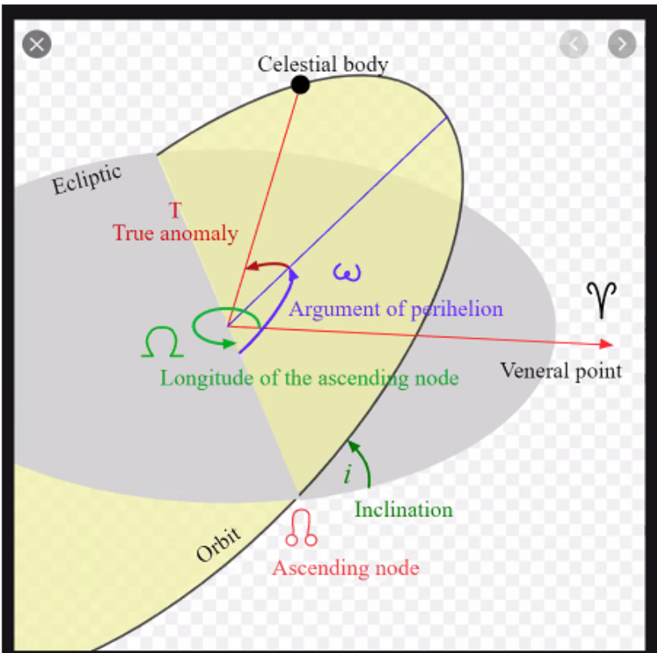

Moons¶
Each of the settings functions as follows:¶
Name - This allows for assigning a name for each moon within the scene. Names are important to help you differentiate between moons. This is also used within some of the trueSKY functionality, and as such users should ensure not to name moons the same thing as this may cause conflicts and undesired results. We have blueprints to get a moon by name.
Texture - This allows for assigning of a 2d texture to represent the moon it is assigned to. It follows the same setup as the legacy iteration of moon texture implementation. This means that the texture will show accurate moon phases Dependant on the date and positioning in relation to the sun.
Colour - The colour will affect not only the texture of the moon, but the light that is reflected off of it. A blend of colours of all the moons currently above the horizon will be applied to the directional light.
Use Presets - This check box allows you to use one of the preset moon templates we have made. Checking this will cause all your currently setting to be overridden by the preset, so ensure to take care before pressing it.
Moon Preset - This drop down only becomes available for use when the above “use presets” setting is checked, and changes all of the settings within the moon array element to a series of preassigned values. Helpful to revert settings back to default.
Albeido - Controls the proportion of light that is reflected by the moon.
Longitude of Ascending Node - This determines the points in which the moon crosses the plane of the equator (due to the moon having a tilted orbit around the earth). Put in slightly simpler terms, this determines the “x” axis is located for the tilted orbit, from the equator. This is referenced in the diagram below for a more visual representation.
Longitude of Ascending Node Rate - The amount the ascending node increases each day (the angle is different at different times of the year, and how much it changes per day will be determined via this setting)
Inclination - This controls the tilt angle of the orbit. 0 will represent the moon rotating directly around the Earth’s equator, adding values to this will alter the angle of the orbital plane.
Argument of Pericentre - This is the closest point of that the moon is to the Earth’s surface. The moons orbit is naturally an ellipses and not a perfect circle. So changing this changes the location in which the two planetary bodies are at their closest.
Argument of Pericentre Rate - This refers to how much the argument of the pericentre changes per day.
Mean Distance - The mean (average) distance the Moon is from the center of the Earth.
Eccentricity - This controls how elliptical the orbit of the moon will be around the earth. 0 will allow for a perfectly circular orbit, 0.5 will be a slight oval.
Mean Anomaly - Controls the position that the moon will be around its orbit at midnight of each day.
Mean Anomaly Rate - This controls how much the mean anomaly changes each day, ie. how far around the orbit the moon will start from each day compared to the day before.
Radius Arc Minutes - Controls the apparent size of the moon when visualized from the surface of the earth. By default this is correct for the earth and its moon, increasing it can add more visibility as well as more dramatic results.
Image from “ https://en.wikipedia.org/wiki/Orbital_elements “
In addition these settings are all tied to the moons lighting and how it will affect the scene, so ensure to be careful when editing settings as these are using a physically correct model. So making the moon extremely large will in return cause the lighting from said moon to be a lot brighter compared to a realistically sized moon.
The moons lighting is controlled in the same was as the sun position. Meaning that it is simply possessing the engines native direction light. This means however that multiple moons in a scene are unable to have separate directional lights. Therefore we take the direction of the brightest moon within the scene. And take an average of all of the moon colors to determine the light color from all the moons to attempt to simulate all of the moons having an influence on the outcome.